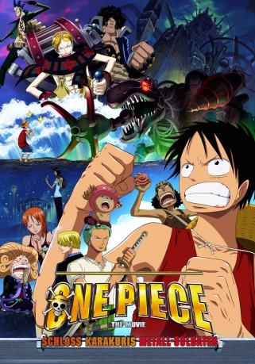

#4294 One Piece - Movie 07 - Schloss Karakuris Metall-Soldaten
 
 IMDB-Wertung: 6.9 / 10
IMDB-Wertung: 6.9 / 10  Metascore: 0
Metascore: 0 
Nachdem sie aus dem Wrack eines anderen Piratenschiffs eine Schatztruhe geborgen haben, freuen sich die Piraten schon auf den Schatz, werden aber an Bord der Going Merry von dem Inhalt überrascht: Eine alte Frau mit Namen Rōba hat sich in der Kiste versteckt. Nach kurzem Hin und Her entschließt sich die Bande, Rōba nach Hause zu bringen, zu einer Insel die Mechajima genannt wird, obwohl sie wie ein Idyll erscheint.
Jahr: 2006
Dauer: 94 Minuten
FSK:
Land: Japan Studio: Fuji Television NetworkTonspuren: DTS - ,
Untertitel: Deutsch,
Auflösung: 1080p (1920x1080) Größe: 4433 MB
Genre: Action, Sci-Fi, Komödie, Fantasy, Animation/Trick
Regisseur: Kônosuke Uda
Drehbuch: Clive Cussler
Soundtrack:
Darsteller:
Datei: X:\Kinder Anime\One Piece\One Piece Movies\One Piece - Movie 07 - Schloss Karakuris Metall-Soldaten (2006, FSK, 1920x1080).mkv seit 04.09.2016
Festplatte: Kinder-Filme+Trick
 Es gibt insgesamt 19 Filme in der Gruppe 'Kinder Anime\One Piece\One Piece Movies'
Es gibt insgesamt 19 Filme in der Gruppe 'Kinder Anime\One Piece\One Piece Movies'